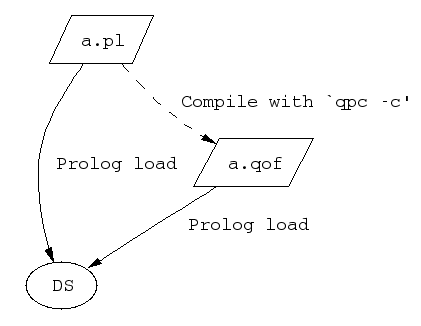
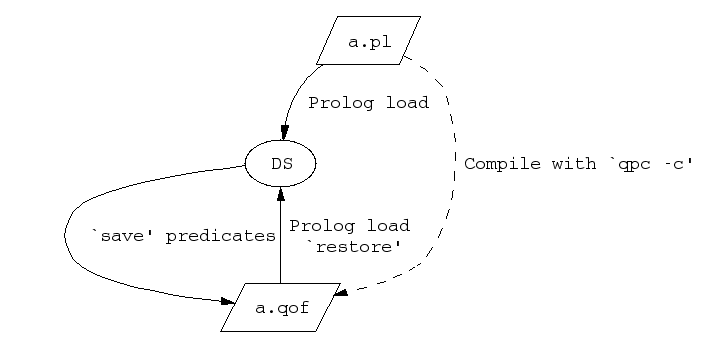

Under the earlier model, a Prolog file could either be compiled into
the development system, or compiled to Quintus Object Format by
qpc, as shown in the following figure.

The ability to save and load QOF files in a development system makes the picture more complicated. The following figure shows the ways a Prolog source file can be compiled or saved.
It would be natural to expect a.qof to be the same, however generated.
But both the save predicates and qpc offer a rich variety of options,
and the reality is less simple (see the following figure).
